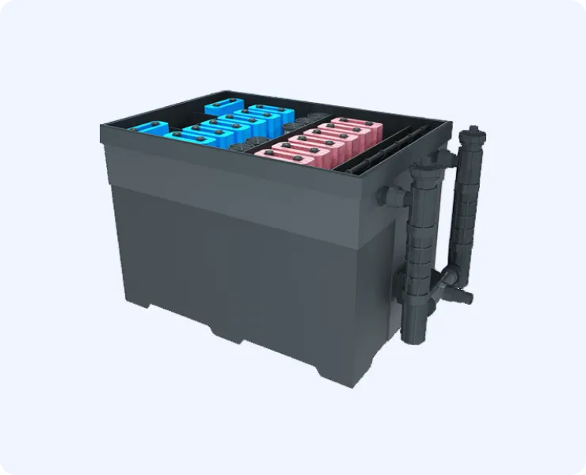

Вернуться в каталог

Фильтры для пруда
Фильтр проточный BF-130I, 30000 л/ч, с УФ 110Вт, для пруда до 150000л
Цена и наличие
- 1 шт.9 509,01 BYN / шт.В наличии
Данные на 23.11.2026.
Характеристики
- Бренд
- Китай
- Тип фильтра
- проточный
- Для пруда
- до 150000 л
- УФ-очиститель
- 110 Вт
- Особенности
- обратная промывка, цеолитовый гранулят
- Пропускная способность
- 30000 л/ч
- Насос SP 630
- 30000 л/ч
- Вход для шланга
- 40-50 мм
- Выход
- 110 мм
- Напряжение
- 220В/50Гц
- Длина кабеля
- 10 м
- Габариты (ШхДхВ)
- 760х1150х740мм
- Страна происхождения
- Китай
Описание
BIO–FILTER 130I - проточный фильтр для пруда.
ФИЛЬТР ПРОТОЧНЫЙ BIO–FILTER 130I, ДЛЯ ПРУДА, 150 М³, 30000 Л/Ч, УФ-ЛАМПА 110 ВТ (2Х55W) Для водоёма объёмом 150 м³. Вся система поставляется полностью укомплектованной: биофильтр, уф-стерилизатор, насос, шланги.